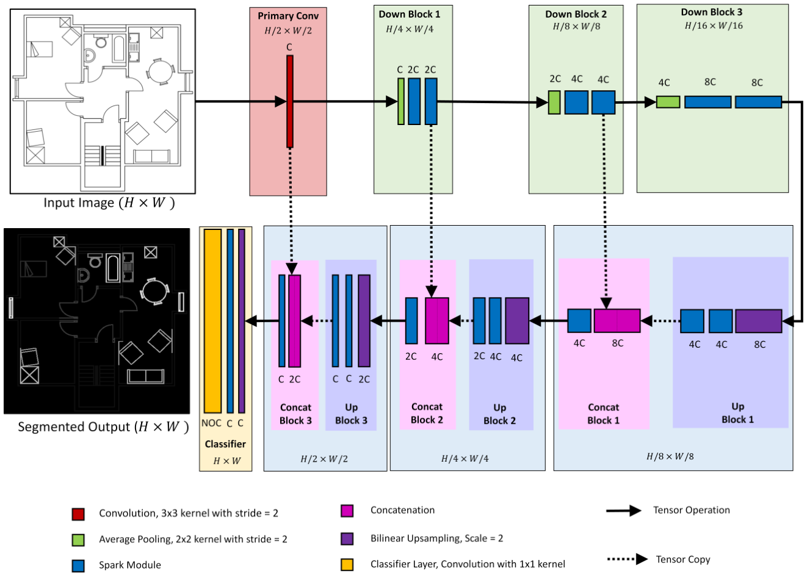
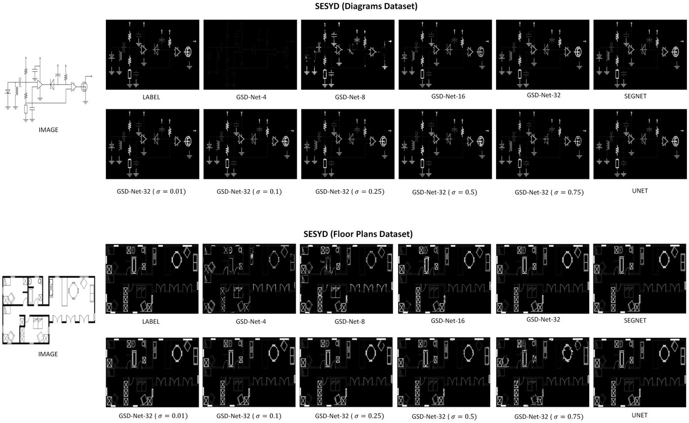

Finding symbols in circuit diagrams and floor plans with a very small network
Technical drawings such as circuit diagrams and floor plans are full of small symbols: a resistor here, a door there. We wanted a network that labels every pixel of such a drawing as background or as one of the symbol types, and that is compact enough to need less memory and less powerful hardware. In its largest version, GSD-Net has about 176 thousand parameters, against roughly 29 million for SegNet, and its pixel accuracy is almost the same (Tables I and III).
The problem
Finding where symbols are in a document is called symbol spotting. It is harder than it sounds, because symbols in real documents are rarely isolated. They touch lines and other symbols, and sometimes only a part of a symbol, such as an arc or an arrow, is what you care about. So we work at the finest level: one label per pixel.
Networks that do this are usually encoder-decoder models. The encoder squeezes the image into compact features, and the decoder expands those features back into a label for every pixel. Copying features across from encoder to decoder (the bridge connections) is common practice for getting sharp outlines. SegNet and U-Net are the standard examples, and they work very well. But each has around 30 million parameters, the numbers a network adjusts while learning (Table III). That means a lot of memory and arithmetic, and faster, costlier hardware to run on.
How it works
We used two ideas. The first is the depth-wise separable convolution. A normal convolution filter looks at all the feature channels at once. A separable one splits the job in two: first a spatial filter on each channel on its own, then a 1×1 filter that mixes the channels. The paper counts the weights as dropping from height × width × channels to height × width + channels, which matters most in deep layers with many channels. We build on the Spark module, first proposed in the SegFast network. It is a modification of the Fire module of SqueezeNet that uses depth-wise separable convolutions for its spatial kernels, which makes it more compact.
The second idea is to enlarge the feature maps in the decoder by simple bilinear upsampling, which is just smooth interpolation. SegFast used depth-wise transposed convolutions for this step, and transposed convolutions are known to create checkered artefacts. Bilinear upsampling has no learned parameters, so it is cleaner and faster.

We evaluated four sizes, called GSD-Net-4, -8, -16 and -32, where the number is the channel count C of the first layer.
What we found
We used two data sets from the Systems Evaluation SYnthetic Documents (SESYD) collection: electrical diagrams with 18 classes, and floor plans with 23 classes. The score is pixel accuracy, the share of pixels labelled correctly. On circuit diagrams, GSD-Net-32 scored 0.999, the same as SegNet (0.999) and above U-Net (0.997). On floor plans it scored 0.997, against 0.998 for SegNet and 0.995 for U-Net. The smaller versions scored lower, down to 0.954 on circuits and 0.914 on floor plans for GSD-Net-4 (Table I).
The size difference is large. The four versions have 4,326, 13,678, 47,598 and 176,302 parameters. SegNet has 29,448,778 and U-Net has 31,032,330. The paper puts the memory use of GSD-Net-32 at about 68% of that of SegNet and U-Net, and says SegNet needs about 99.2 times and U-Net about 113.1 times as many floating point operations as GSD-Net-32, which needs 0.4076 GFlops (Table III). These measures use a 3×256×256 input, batch size 2 and 10 output classes.
Graphical documents often suffer from noise, so we also added Gaussian noise of increasing strength to the images. GSD-Net-32 held up. At the strongest noise level (σ = 0.75) it scored 0.991 on circuits and 0.974 on floor plans. U-Net fell to 0.878 on floor plans there, and SegNet scored 0.982 (Table II). In the paper's words, the model outperforms U-Net and can be compared with SegNet.

Results in more detail
The data sets are the electrical diagrams (18 classes: one background class, one for the template and 16 different elements) and the floor plans (23 classes: background, template and 21 elements). We turned the annotations into pixel-level masks and trained on them. The experiments ran on an Nvidia GTX 1080 GPU with an Intel i7 5820K processor.
The first table puts all four sizes of our network next to SegNet and U-Net. Each number is the pixel accuracy, the ratio of correctly labelled pixels to all pixels, so 1.000 would be a perfect score.
| Data set | GSD-Net-4 | GSD-Net-8 | GSD-Net-16 | GSD-Net-32 | SegNet | U-Net |
|---|---|---|---|---|---|---|
| SESYD (Circuits) | 0.954 | 0.974 | 0.994 | 0.999 | 0.999 | 0.997 |
| SESYD (Floor Plan) | 0.914 | 0.941 | 0.978 | 0.997 | 0.998 | 0.995 |
The score goes up with every step in the channel count C, from 4 to 32. On circuits the step from 16 to 32 moves the score from 0.994 to 0.999, and on floor plans from 0.978 to 0.997 (Table I). We read the gap between the 16 and 32 versions as marginal, and the 32 version as the one that performs almost as well as SegNet and beats U-Net.
The second table repeats the comparison with noise added to the images. Only GSD-Net-32, SegNet and U-Net were tested. We made five noisy versions of each data set, adding Gaussian noise of strength σ (the larger σ, the noisier the image). A σ of 0 means no noise.
| Data set | Model | σ = 0 | σ = 0.01 | σ = 0.1 | σ = 0.25 | σ = 0.5 | σ = 0.75 |
|---|---|---|---|---|---|---|---|
| SESYD (Circuits) | GSD-Net-32 | 0.999 | 0.999 | 0.999 | 0.998 | 0.996 | 0.991 |
| SESYD (Circuits) | SegNet | 0.999 | 0.999 | 0.999 | 0.998 | 0.997 | 0.992 |
| SESYD (Circuits) | U-Net | 0.997 | 0.996 | 0.996 | 0.994 | 0.991 | 0.988 |
| SESYD (Floor plan) | GSD-Net-32 | 0.997 | 0.996 | 0.993 | 0.989 | 0.987 | 0.974 |
| SESYD (Floor plan) | SegNet | 0.998 | 0.998 | 0.997 | 0.996 | 0.989 | 0.982 |
| SESYD (Floor plan) | U-Net | 0.995 | 0.993 | 0.987 | 0.928 | 0.908 | 0.878 |
On the circuits all three models lose little, and GSD-Net-32 and SegNet stay within a thousandth of each other at every level. The floor plans separate them more. U-Net drops from 0.987 at σ = 0.1 to 0.928 at σ = 0.25, and ends at 0.878. GSD-Net-32 ends at 0.974 and SegNet at 0.982 (Table II).
The third table is about size. For each model it lists the number of parameters, an estimated size in megabytes, and the floating point operations (the count of additions and multiplications for one input, in billions, written GFlops). All three measures use an input of 3 × 256 × 256, batch size 2 and 10 output classes.
| Model | Parameters | Estimated size (MB) | GFlops |
|---|---|---|---|
| GSD-Net-4 | 4,326 | 54.11 | 0.0180 |
| GSD-Net-8 | 13,678 | 101.36 | 0.0443 |
| GSD-Net-16 | 47,598 | 195.93 | 0.1264 |
| GSD-Net-32 | 176,302 | 385.30 | 0.4076 |
| SegNet | 29,448,778 | 566.09 | 40.4421 |
| U-Net | 31,032,330 | 565.13 | 46.0982 |
Even the largest of our four sizes is far below SegNet and U-Net in parameters and in GFlops (Table III). The smallest, GSD-Net-4, has 4,326 parameters and 0.0180 GFlops. Its estimated size is 54.11 MB, while SegNet is listed at 566.09 MB and U-Net at 565.13 MB. In the paper's words, the key contribution lies in compactness, with a minimal trade-off in performance.
Discussion
We conclude that a compact network can label graphical symbols pixel by pixel almost as well as the large standard models. Compared with SegNet and U-Net, GSD-Net uses fewer parameters, less memory and far fewer floating point operations. In accuracy it is better than U-Net and comparable to SegNet, where the difference is marginal. It also held up under added noise, and the quality of the output did not degrade much, even with noise.
We attribute the compactness to the depth-wise separable convolutions in the Spark modules. We replaced the transposed convolutions of SegFast by bilinear upsampling to avoid the checkered artefacts they create, and because bilinear upsampling has no learned parameter.
There are limits. GSD-Net-4 gives the worst segmented output, and the larger sizes get better as C grows. Because the 16 and 32 versions differ only marginally, we think the network could be made even more compact. Our experiments were limited to standard graphical symbols from synthetic documents that are visually clear and easy to check against the gold standard. Real documents, where symbols touch and overlap other elements, are the setting that motivated the work.
For the future, we see two directions. One is further compression with methods such as pruning or kernel factorisation. The other is to apply the network to other graphical elements that carry meaning in a domain, such as logos, musical notes and line segments, which can occur together in engineering, electrical and architectural drawings.
Sources
The figures and tables listed here are taken from the paper cited at the top of this page; the numbers quoted in the text come from it too.
- Figures: Fig. 2, Fig. 5
- Tables: Table I: pixel accuracy of the four GSD-Net sizes, SegNet and U-Net on the two data sets; Table II: pixel accuracy of GSD-Net-32, SegNet and U-Net as noise increases; Table III: parameters, estimated size and floating point operations of each model
Acknowledgements
This work was partially supported by the project order no. SB/S3/EECE/054/2016, dated 25/11/2016, sponsored by SERB (Government of India), and was carried out at the Centre for Microprocessor Application for Training Education and Research, CSE Department, Jadavpur University. The authors also thank Sayan Chatterjee from the Dept. of CSE, Sikkim Manipal Institute of Technology, for assisting in this research project as an intern.
Cite the paper
Swarnendu Ghosh, P Shaw, N Das, KC Santosh (2019). GSD-Net: compact network for pixel-level graphical symbol detection. International Conference on Document Analysis and Recognition Workshops (ICDARW), pp. 68–73 · IEEE.
@inproceedings{ghosh2019gsd,
author = {Ghosh, Swarnendu and Shaw, P and Das, N and Santosh, KC},
title = {{GSD-Net:} compact network for pixel-level graphical symbol detection},
booktitle = {International Conference on Document Analysis and Recognition Workshops (ICDARW)},
pages = {68--73},
publisher = {IEEE},
year = {2019},
doi = {10.1109/icdarw.2019.00017}
}